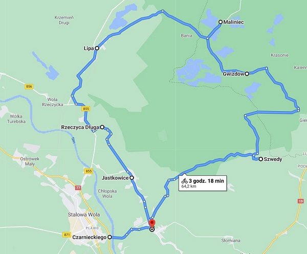

Informacje o wycieczce
Plan wycieczki:
- Start:Stalowa Wola, Rondo Czarnieckiego
- Pysznica
- Szwedy
- Gwizdów Rezerwat przyrody "Imiełty Ług"
- Maliniec
- Lipa
- Rzeczyca Długa
- Jastkowice Rezerwat przyrody Jastkowice
- Koniec: Pysznica
 Długość trasy: ok. 64 km
Czas przejazdu: ok. 3h 20 min
Godzina rozpoczęcia: 8.00
Przewidywana godzina zakończenia: 15.00
Przystanki:
- co 10 km
- w miejscach zwiedzanych
Rzeczy wymagane od uczestników:
- w pełni sprawny rower
- kask
- jedzenie do przekąszenia
- woda
- sportowe ubranie
- okulary przeciw słoneczne (najlepiej z filtrem UV)
- sportowe obuwie
- legitymacja szkolna
- krem z filtrem